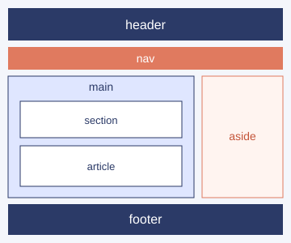

¿Qué es la semántica?
Es usar etiquetas que describen qué tipo de contenido contienen, como header, nav, main, section, article y footer.
Estructura básica de una página web
Un elemento HTML tiene una etiqueta de apertura, un contenido y una etiqueta de cierre. Los atributos dan información extra al elemento, por ejemplo href="..." en un enlace.
<html>: contiene todo el documento.<head>: información que no se muestra.<body>: contenido visible de la página.Más información en MDN.
Es usar etiquetas que describen qué tipo de contenido contienen, como header, nav, main, section, article y footer.
